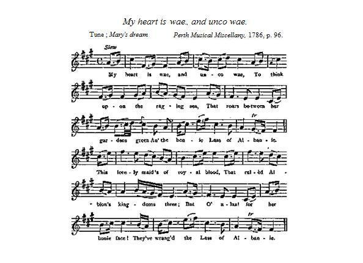
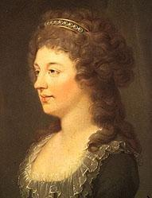
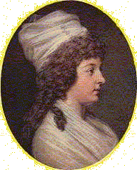

My heart is wae and unco wae
Quelle rancoeur emplit mon coeur!
by Robert Burns (1787)
Tune - Mélodie"Mary's Dream" by John Lowe (1750 - 1798)
from
Sequenced by Christian Souchon

|
To the tune:
The tune "Mary's Dream" is the composition of John Lowe , a minor poet, and the author of the song "Mary, weep no more for me". Lowe, the son of a gardener to the Earl of Kellmore, was born in Galloway in the year 1750. At the age of fourteen he was apprenticed to a weaver; he educated himself, and entered the University of Edinburgh as a student of Divinity. He is said to have written a tragedy, was a skilful musician, and a player on the violin. He died in America in 1798. Kirkpatrick Sharpe severely censured Allan Cunningham for mutilating Lowe's song. All the mischief done by ' Honest Allan ' as a literary forger will never be discovered. The tune Mary's Dream is from the Perth Musical Miscellany, 1786, 96, where it is printed with Lowe's verses. The music is also in the Museum, 1787; Calliope, 1788, 16; and Aird's Airs, 1788, iii, No. 480." Source:"The Complete Songs of Robert Burns Online Book" (see links) |
A propos de la mélodie:
Le chant "Le rêve de Marie" fut composé par John Lowe , un poète mineur à qui l'on doit également le chant "Marie, ne pleurez pas pour moi". Fils d'un jardinier au service du Comte de Kellmore, il naquit dans le Galloway en 1750. A 14 ans il devint apprenti tisserand. Autodidacte, il entra à la faculté de théologie de l'université d'Edimbourg. On dit qu'il écrivit une tragédie, qu'il fut un très bon musicien et violoniste. Il mourut en Amérique en 1798. Kirkpatrick Sharpe critiqua vertement Allan Cunningham pour avoir mutilé le chant de Lowe. On ne mesurera jamais l'étendue des dégâts causés par 'ce brave Allan' et ses forgeries littéraires. La mélodie "le rêve de Marie" est tirée des Miscellanées Musicales de Perth, 1786, n°96, où elle accompagne le poème de Lowe. On la trouve aussi dans le "Musée" de Johnson, 1787; dans "Calliope, 1786, N°16 et dans les "Airs" d'Aird, 1786, III, N°480." Source:"The Complete Songs of Robert Burns Online Book" (Cf. liens) |

|
MY HEART IS WAE AND UNCO WAE [1]
1. My heart is wae, and unco wae, To think upon the raging sea, That roars between her gardens green An' the bonnie Lass of Albanie. 2. This lovely maid 's of royal blood, That ruled Albion's kingdoms three ; But O, alas! for her bonie face! They've wrang'd the Lass of Albanie. 3. In the rolling tide of spreading Clyde, There sits an isle of high degree, And a town of fame, whose princely name Should grace the Lass of Albanie. [2] 4. But there is a youth, a witless youth, That fills the place where she should be; We'll send him o'er to his native shore, And bring our ain sweet Albanie. [3] 5. Alas the day, and woe .the day ! A false usurper wan the gree, Who now commands the towers and lands— The royal right of Albanie. 6. We'll daily pray, we'll nightly pray, On bended knees most fervently, The time may come, with pipe and drum We'll welcome home fair Albanie. Source: "Chambers's Edition, 1852. Tune, Mary's Dream. A facsimile is in the Centenary Edition, 1897, iv. 9a." |
  |
QUELLE RANCOEUR EMPLIT MON COEUR! [1]
1. Quelle rancoeur emplit mon coeur Sachant qu'une mer en folie Sert de chemin vers les jardins De la belle enfant d'Albanie. 2. Qui doit sa grâce à cette race Qui tint la triple Albion unie. C'est cette enfant aux traits charmants Qu'on a lésée! Pauvre Albanie! 3. Le flot enserre un pan de terre Au sein de la Clyde élargie Et un bourg, dont le noble nom Parerait l'enfant d'Albanie. [2] 4. Il te revient le rang que tient L'éphèbe à la face abrutie! Il doit, le pauvre, rejoindre Hanovre. Que vienne la douce Albanie! [3] 5. Qui donc hissa sur le pavois L'imposteur à qui l'on confie Tours et provinces. Ce faux prince Exerce tes droits! Albanie. 6. C'est de tout coeur, avec ferveur, Qu'à genoux, sans cesse, l'on prie: Puissent tambour et fifre un jour Saluer ton retour, Albanie! (Trad. Christian Souchon(c)2010) |
|
[1] "This poem is supposed to have been written immediately after the receipt of the news of the supposed marriage of Miss Walkinshaw with Prince Charles Stuart, who declared the legitimatization of his daughter by a formal deed, registered in France in December, 1787. On his death, the year following, the Duchess of Albany was assumed to be his sole heir.
The verses are more than a sentimental effusion of Jacobitism ." Source:"The Complete Songs of Robert Burns Online Book" (Cf. liens) [2] The Isle of Bute in the Fifth of Clyde and the island's only town Rosethay had, about the turn of the 13th century, come into possession of Walter Fitzalan, who had been given the title of "High Steward" or "Great Steward" of Scotland. His descendants became the House of Stewart (Stuart). When in 1371 the 7th High Steward, Robert, inherited the throne of Scotland, as Robert II, this title has been held by the heir-apparent as a subsidiary title to that of "Duke of Rothesay" . [3] Robert Burns, who shuns using the strange style "Duchess of Albany" in his poem, is indignant that from 1714 (to the present day, in fact), both official titles should be wrongfully held by the Prince of Wales from the House of Hanover (in 1787, by George, the future King George IV ). |
[1] "Ce poème fut, croit-on, composé aussitôt après l'annonce du mariage possible de Clémentine Walkinshaw avec le Prince Charles Stuart, lequel légitima sa fille par un acte officiel enregistré en France en décembre 1787. A sa mort l'année suivante, la Duchesse d'Albanie devenait, semblait-il, son héritière unique.
Les strophes qu'on va lire sont plus qu'une effusion de Jacobitisme de pacotille ." Source:"The Complete Songs of Robert Burns Online Book" (Cf. liens) [2] L'Île de Bute dans l'estuaire de la Clyde et l'unique ville de celle-ci, Rosethay , étaient devenues au début du 13ème siècle, la possession de Gautier Fils d'Alain, qui s'était vu décerner le titre de "Grand Intendant" (Steward) d'Ecosse. Ses descendants devinrent la Maison des Stuarts. Lorsqu'en 1371, le 7ème Grand Intendant, Robert, hérita du trône d'Ecosse, sous le nom de Robert II, son titre fut transféré à l'héritier apparent, en tant que titre subsidiaire à celui de "Duc de Rothesay" . [3] Robert Burns, qui se garde bien d'user du bizarre titre de "Duchesse d'Albanie", s'indigne du fait que, depuis 1714 (et aujourd'hui encore), le Prince de Galles issu des Hanovre s'arroge irrégulièrement les deux titres officiels (en 1787, il s'agissait du futur roi Georges IV ). |
|
|
|
|
Charlotte Stuart, Duchess of Albany (1753 - 1789)
After the young Prince's return to France in 1746, peace between England and France in 1748 ought to have ended his efforts to prepare a new attempt. It was in vain that he declared he would not be bound by the provisions of the treaty: he was apprehended and on the 17th of December conducted to the French border. For years he wandered over Europe, often in disguise. In 1750, 1752 and 1754, he was in London, risking his safety for his cause. As from 1752, he lived with Clementina Walkinshaw , whom he had first met at Bannockburn House while conducting the siege of Stirling in 1746 and by whom he had a daughter, Charlotte, born on 29th October 1753. Clementina left the Prince in 1760 and took Charlotte with her. In 1772 France arranged that Louise, Princess of Stolberg, should marry the Prince who was now known under the title of Count Albany . Six years afterwards, however, their unhappy union ended with a formal separation. In 1783 Charles Edward, seriously ill, reconciled with his daughter Charlotte whom he created Duchess of Albany, when her legitimatization was enacted by the Parliament of Paris in 1787 and she remained with him during the last two years of his life. He died in Rome on the 31st of January 1788, and was buried at Frascati near Rome. His body was later buried in the Grotte Vaticane of St Peter's along with that of his father and brother. ( see picture on next page ) Charlotte died less than two years after him, on 17th November 1789. She left three children, two daughters and a son, Charles Edward whose lineage was uncovered in the 1950s. This son died in Scotland in 1854 and was buried at Dunkeld Cathedral, where his grave can still be seen. He married twice, but had no issue. Source: Wikipedia: Charlotte Stuart Duchess of Albany |
Charlotte Stuart, Duchesse d'Albanie (1753 - 1789)
Après que le jeune Prince fut rentré en France en 1746, la paix conclue entre l'Angleterre et la France en 1748 aurait dû le dissuader de tenter une nouvelle aventure. C'est en vain qu'il déclara ne pas vouloir se plier aux dispositions du traité. Il fut arrêté et, le 17 décembre, reconduit à la frontière. Des années durant, il sillonna les routes d'Europe, souvent sous une fausse identité. En 1750, 1752 et 1754, il se risqua même à aller à Londres pour y promouvoir sa cause. A partir de 1752, il vécut avec Clémentine Walkinshaw , une jeune femme dont il avait fait la connaissance à Bannockburn House, au moment du siège de Stirling en 1746. Ils eurent une fille, Charlotte, née le 29 octobre 1753. Clémentine quitta le Prince en 1760 et emmena Charlotte avec elle. En 1772, la diplomatie française arrangea le mariage du Prince, désormais connu comme le Comte d'Albanie , avec la Princesse de Stolberg. Cette union malheureuse se termina par un jugement de séparation six ans plus tard. En 1783, Charles Edouard, gravement malade, se réconcilia avec sa fille Charlotte, qu'il créa Duchesse d'Albany, lorsque le Parlement de Paris enregistra sa légitimation en 1787. Elle demeura auprès de lui les deux années qui s'écoulèrent jusqu'à la mort de son père qui survint à Rome le 31 janvier 1788. Il fut inhumé à Frascati, près de Rome. Plus tard son corps fut transféré avec ceux de son père et de son frère dans la Grotte Vaticane de la Basilique Saint Pierre. ( cf. illustration page suivante ) Charlotte mourut deux ans plus tard, le 17 novembre 1789. Elle laissait trois enfants, deux filles et un garçon, Charles Edouard, dont l'ascendance ne fut découverte que dans les années 1950. Ce fils décéda en Ecosse en 1854 et est enterré dans la cathédrale de Dunkeld où l'on peut encore voir sa tombe. Il se maria deux fois mais n'eut pas de descendance. Source: Wikipedia: Charlotte Stuart Duchess of Albany |
|
|
|